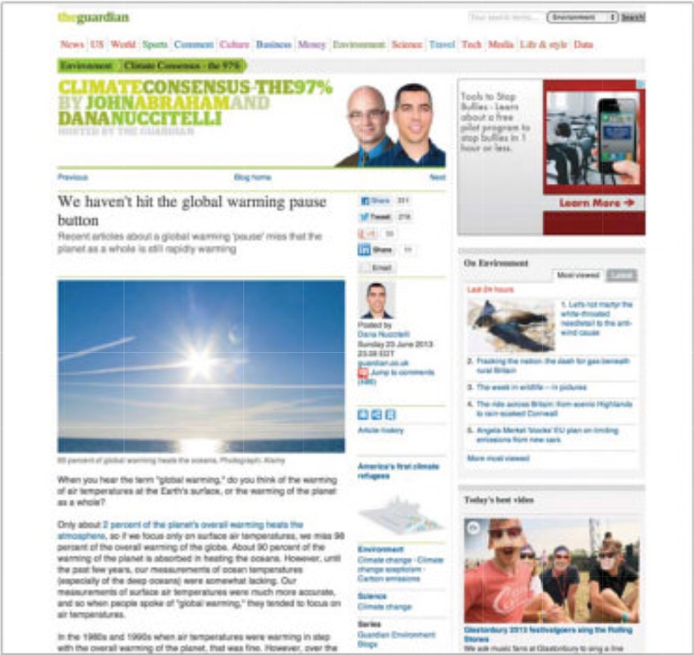

Design of
Journalism.
Over the past decade or so print journalism has gone from the main platform for journalists and serious journalism to more of a niche novelty market. Since the big move to online, many have abandoned print all together. This move to online has accentuated the importance of design and journalism and has raised more serious questions surrounding how design effects the way people consume and interact with news. A field previously considered luxury and extra has now become the most important part of relaying information to the masses.
This move to digital has allowed publications to reach a larger audience and connects the world in ways that before were not possible.
The Guardian, established in 1801, has become one of the leading online publications.

In 1988 David Hillman implemented the papers first grid system and modernized the cover title using Garamond and Helvetica.
Now almost 30 years later, Simon Esters and Mark Porter are working hard to “keep up with the standards set by magazines.” they have made multiple changes including changing the typeface, printing in color, and updating the grid format. They have even commissioned designers Christian Schwarts and Paul Barnes to create costume typefaces.
When designing and formatting the site Neville Brody, one of The Guardians original designers helped develop a site with as little navigation as possible. Mark porter redesigned the site in 2007 and in 2012 the guardian designed and launched its mobile site. In 2013 the paper had managed to develop into a media-rich, interactive website. They have developed a new interactive feature called “fire storm” which includes audio, video, images, and other interactive elements. While the print edition has a circulation of 213,000 the website attracts close to 4 million browsers from around the world.
picture 1
picture 2
"The design of journalism is moving towards the incorporation and stimulation of all of the senses."
- Nathalie Moreno
Since the move from print to web the print industry has changed a lot. When, before it was an outlet for news sharing, print is slowing transforming into a novelty, a platform for creative expression.
Cathy Olmedillas founded a magazine called “Anorak” subtitled “the happy mag for kids” that is full of fun illustrations, stories games and activities. Her target audience are boys and girls ages 6-12 however, the magazines highly graphic look appeals to design-aware adults. The first 20 issues were design by a man named Rob Lowe and now a different designer designs each issue.
Cathy Olmedillas prides herself in the print magazine and recognizes the important of print in this digital age. Olmedillas works very closely with many amazing illustrators. This magazine aims to “create something that will keep kids entertained, feed their imagination, and tap into their natural curiosity.”
Anorak is a testament to the movement of print in an artistic direction away from the traditional news platform.